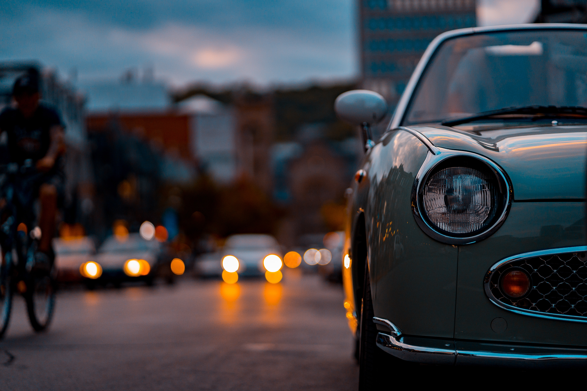
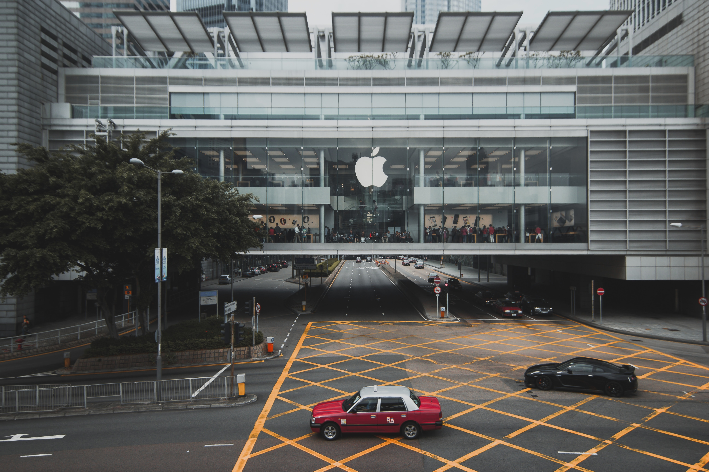
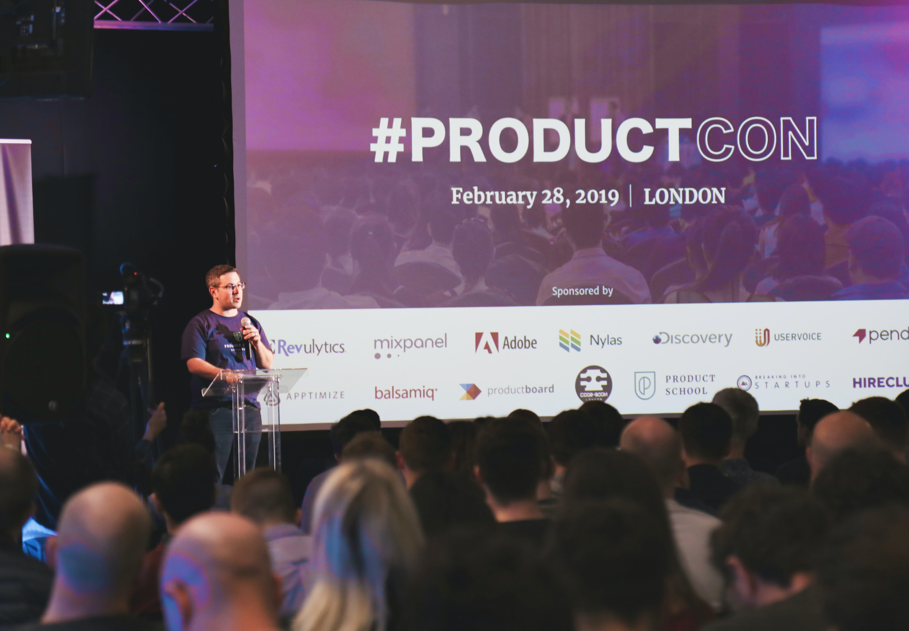

История о компание
Датой основания корпорации считается 26 декабря 1933 года, когда в результате слияния компаний «Тобата имоно» и «Нихон сангё» была создана новая компания, которая с 1 июня 1934 года носит название «Ниссан мотор» (по первым буквам названия компании «Нихон сангё» — «японская промышленность»).
В мае 1935 года компания приняла решение о развитии торговой марки «Ниссан», но практически до 1980-х годов лицом компании были различные модификации автомобилей «Datsun», выпускавшихся ещё до создания компании (в 1986 году эта марка перестала существовать, а в 2013 году производство автомобилей Datsun было возобновлено).
С начала 1950-х годов компания активно и успешно стала заниматься разработкой и производством ракетных двигателей, установок для запуска ракет, а затем решила расширить производственную сферу, занявшись также и производством двигателей для кораблестроительной отрасли.

Продажи компании

К середине 1990-х годов компания испытывала существенные финансовые трудности, деятельность была неэффективной; долги составляли 12 млрд долл. и до банкротства оставалось несколько недель. В итоге в 1999 год контрольный пакет акций компании был продан французской Рено (Renault): французской компании принадлежит 44,4 % акций Ниссан, а Ниссан, в свою очередь, владеет 15 % акций Рено.
Поставленный Рено во главе Ниссан Карлос Гон сумел воплотить программу возрождения фирмы (англ. Nissan Revival Plan, NRP) и вывел компанию из кризиса, вследствие чего обрёл большую популярность в Японии.
В результате сильнейшего землетрясения японские заводы корпорации были закрыты с 11 по 23 марта 2011 года, предприятие по производству двигателей Nissan Iwaki простаивало до 17 апреля, не удалось произвести порядка 55 тыс. автомобилей.